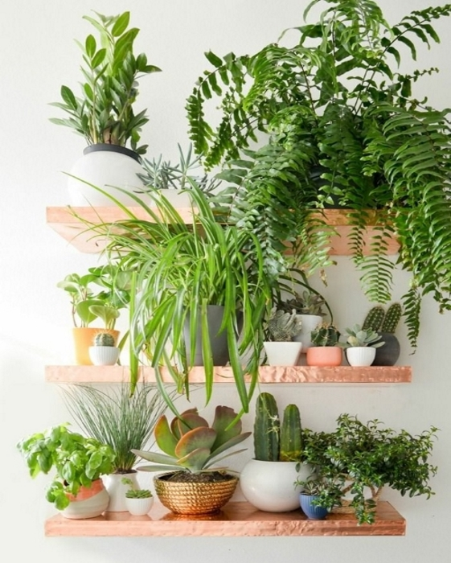

Tenha uma decoração barata e criativa
06.02.2017 14:00 por Kayalla
Uma bela decoração não precisa custar uma fortuna, veja algumas dicas para dar um novo visual à sua casa sem estourar o orçamento.
1- Lembre-se do verde
Uma das melhores formas de dar vida à uma casa é adicionando plantas. Elas podem fazer o ambiente parecer mais belo, confortável e com boas energias. Em sua cozinha, adicione um pequeno jardim de ervas ao ambiente. Além disso, elas darão um ótimo sabor à comida!
2- Aposte nos adesivos
Uma maneira muito fácil de mudar um quarto ou qualquer outro cômodo é com uma arte na parede. Além de serem de fácil aplicação, baratos e com diversas opções, os adesivos são uma ótima escolha para quem quer decorar ou redecorar a casa sem precisar gastar muito. Explore sua criatividade e encontre a arte que mais faz o seu estilo.
3- Use espelhos
Se você possui uma sala pequena saiba que espaços apertados parecem mais espaçosos quando apresentam um grande espelho (pelo menos três quartos da altura da parede). É um clássico truque de decoradores de interiores que você pode experimentar em sua casa sem gastar muito.
4-Faça novos móveis com pallets

Uma nova tendência na decoração são os móveis feitos de pallets. Facilmente encontrados e com preço acessível, eles podem dar forma à camas, mesas, armários e sofás, permitindo um ambiente cheio de criatividade e originalidade, refletindo as preferências do dono.
5-Pratos na parede!
Essa dica de decoração talvez traga lembranças da casa da sua avó, mas pratos são uma interessante alternativa aos quadros. Quando apresentam cores e desenhos criativos criam um ponto interessante em sua parede. Monte com os pratos um layout que você gosta e veja sua parede ganhar um visual renovado.